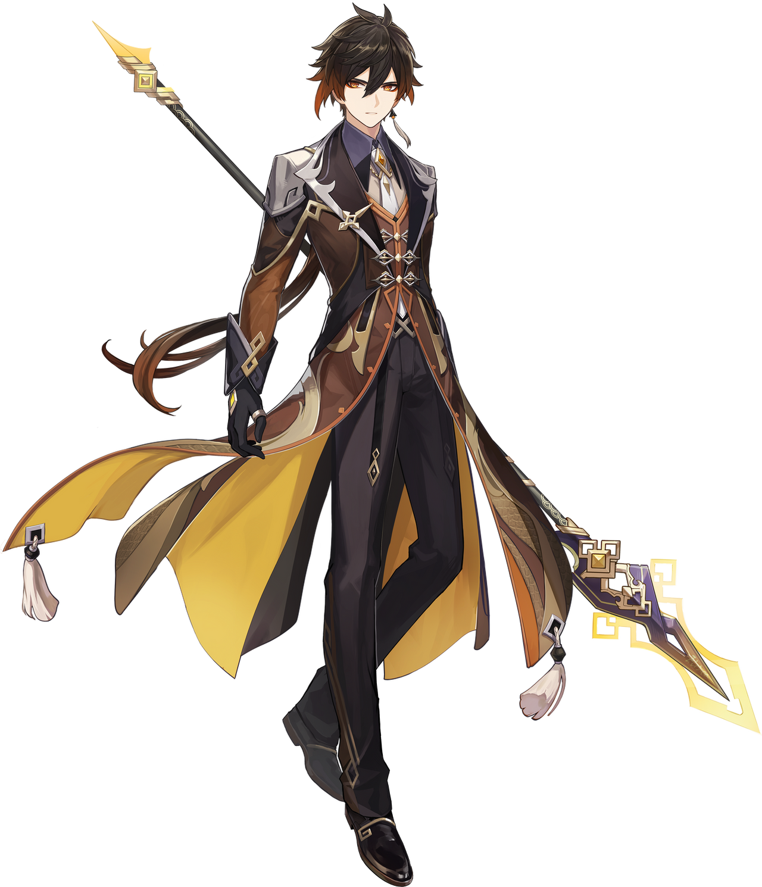

Zhongli
Zhongli is a character from the popular mobile game that almost everyone knows of thanks to the
repeatitive 'emergency food' ads on Youtube. Yes, I am talking about Genshin Impact, my new
obsession. And Zhongli, aka, Morax, aka Rex
Lapis, is my latest 2D crush.
| Introduction |
| Appearance |
| Too rich? or too poor? |
| Quote |
| Conclusion |
Zhongli
| Rarity | : ⭐⭐⭐⭐⭐ |
| Other Names | : Rex Lapis, Morax, God of Contracts |
| Age | : 6000+ years |
| Region | : Liyue |
| Birthday | : December 31st |
| Weapon | : Polearm |
Introduction
Zhongli is a consultant in Wanshen Funeral Parlour in Liyue. He mysteriously has a vast amount of knowledge about in and outside of Liyue, earning him the name 'The Walking Encyclopedia' from some. He also loves to share the knowledge with the people around him, which makes our dear 'grandpa' quite talkative.
He is often seen at the wine shop, listening to the stories of ancient Liyue by the storyteller Tian. Because of his expertise in various things, he is well respected by most people in the Liyue (except Paimon and the traveller, I suppose :) ).
After the the events in Rite of descesion and the quests to find the adepti, the traveller is introduced to Zhongli through Childe. Thus begins the quest to hold the Rite of Parting along with him.
Personal Experience:
**Contains potential spoiler**
Ran from Monstadt to Liyue as if running in a marathon, just to find
Rex Lapis dead.
Made me a bit dead inside as well :)
Appearance
Zhongli currently appears as a tall man with fair skin and a stern expression. His eyes are bright and sharp, amber in color with glowing yellow pupils set in the shape of diamonds. He wears red eyeliner on the lower lids of his eyes. When using Geo, his eyes become luminescent. His dark brown hair is styled in a windswept fashion with a longer fringe that hangs from the right side of his face. It fades to amber brown at the tips and is pulled back in a long ponytail that falls beyond his waist.  When he is using his Geo abilities, his amber highlights glow. This appearance is also used in The Statues of The Seven's depiction of Rex Lapis around Liyue.
His attire is elegant and form-fitting, consisting of a beige dress shirt, a brown and amber waistcoat, slim black trousers, black dress boots, and black gloves with twin silver archer rings on the thumbs. His neckpiece is a white tie pinned at the throat by an amber gemstone. His left ear is adorned with a jeweled tassel earring. Over everything, he wears a long dark brown tailcoat with dragon scale patterns, gold and silver accents, golden tassels, and Rex Lapis' diamond symbol on the back. Zhongli's clothes are decorated with diamond symbols found on his sleeves, belt, trousers, waistcoat buttons, and tailcoat buttons. Similarly to Venti, because he was an Archon with an innate Gnosis, the "Vision" embedded on his chain at the small of his back is nothing more than a fake.
Previously, he appeared as a brown and amber Chinese dragon/qilin with gold accents known as the Exuvia.
His outfit, Hermit of Mortal Life, is described to be his leisurewear of choice as the consultant of the
Wangsheng Funeral Parlor.
Are we living the life of rich people, or suffering from the struggles of poverty?
If you go out for shopping with Zhongli, these are what you will face:

He would order the whole stock of the item you are supposed to buy. ALL OF THEM. No bargaining, no
second thoughts. When the happy shopkeeper is packing the the goods, you'd be wondering how rich this
man is, or, just how poor you are, only to find him turn to you, and saying, "Do you...have any mora on
you? I forgot to bring any"
And the cycle goes on.
It is always Childe who comes and saves the day by providing
all the financial support for Zhongli. According to him,our delusional grandpa cannot imagine himself
being poor, hence he is never concerned about mora, although he almost never has any mora with him
either.
At the end of the journey, he explains to the traveller why he is so broke all the time *Cute >w<*. Then he was like, "We only spent Fatui money so it wasn't that bad of a deed" *Sheeesh XD*
Quote
Here is the most famous quote of this ancient archon, which unfortunately has also become a meme material. (An unnecessary addition to this article, but I just want to use audio tag heh)
Conclusion
After hanging out with him for all this time, I have realized that instead of crushing on the pretty face of this pretty boy (like I have been doing since before even starting playing the game), I feel kind of respectful(?) towards this old man now. Whatever the case is, it is really fun being with him. As the Ferrylady said, "Once you become entagled with Mr.Zhongli, there's no getting away from him at all", I really am now thinking of being stuck in Liyue for a while more.
A plot twist that even I myself was not expecting.
BONUS:
 (Clickable Image)
(Clickable Image)
Finally, the only thing I want to say to the non-player readers is that : If you want to take a tour
around Teyvat, just play on your friend's device for 5-10 minutes. No need to create your own
account. It's a stupid game. I do not recommend playing this to anyone.